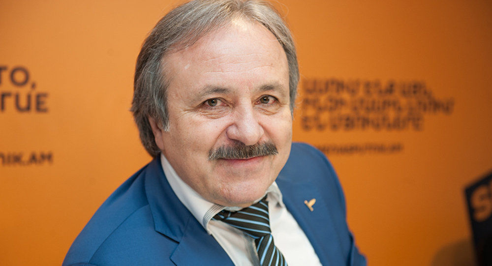

Родился знаменитый врач 7 февраля 1959 г. в селе Старый Батакоюрт, которое находится в Северной Осетии. Семья Казбека в 1963 году сменила место жительства, и до 10 лет мальчик жил в городе Терек.
Хирург с большим уважением и любовью отзывается о своих родителях. Они смогли привить ему навыки всестороннего мышления и креативности, что в последующем помогло ему в карьере врача. Также воспитали в нем доброту, уважение и заботу к родным и близким.
Окончил медицинский вуз Северной Осетии, а после продолжал свое обучение в ординатуре, под контролем лучших докторов. На этом хирург не остановился, продолжая повышать свою квалификацию в штате Мичиган, Германии, Франции, Чехии и Италии.Благодаря своему старанию в учебе, постоянному совершенствованию навыков и огромному трудолюбию Казбек Кудзаев получил множество наград, дипломов и званий. Является заслуженным врачом Южной Осетии и кандидатом наук.
Парень решил не нарушать семейных традиций и окончил мединститут. Он мог стать успешным врачом, как и отец, однако душа требовала петь. Казбек благословил сына на удачное творчество и сказал, что тот должен стать лучшим в своем деле.
